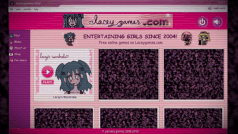
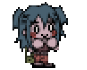
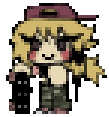
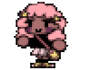

Four corrupted Flash-era minigames hiding a psychological horror story. A cheerful blue-haired girl. A developer who vanished in 2010. And gameplay that slowly stops pretending to be innocent. Play Lacey's Flash Games free in your browser now.
Psychological Horror4 Full GamesMultiple EndingsPlay Free
A 2000s Flash Collection — With Something Wrong Underneath
Lacey's Flash Games presents itself as a lost relic from the golden age of browser gaming. The interface mimics an old desktop with pop-up windows and chiptune music. A cheerful blue-haired girl named Lacey needs your help — picking outfits, running a diner, caring for pets, and applying makeup. Four minigames, each built as a fully playable Flash-era experience. Anyone who grew up clicking through dress-up games and Diner Dash clones will feel an immediate pull of nostalgia. That nostalgia is exactly what Lacey's Flash Games uses to disarm you.

The dress-up interface is fully functional and genuinely charming. The psychological horror doesn't replace the gameplay — it seeps through its cracks.
How Innocent Flash Games Become Psychological Horror
As you spend time with these titles, the experience begins to rot. Clothing descriptions shift from "a cute pink top" to sentences that read like someone's private fear written by accident. Diner recipes corrupt — ingredients that don't belong, customers who aren't customers. Pets vanish from the shop without explanation. Makeup clients stare without blinking. The music desynchronizes. Dialogue boxes return words you never typed.
Nothing announces itself as horror. The horror simply accumulates — detail by wrong detail — until the cheerful facade is a distant memory. This is psychological horror that understands its medium: Lacey's Flash Games corrupts not just the software, but your own recollections of the thousands of innocent Flash games you played growing up.
The Story of Rocio Yani and Yaniaso Games
The games were supposedly created by Rocio Yani, co-founder of the fictional studio Yaniaso Games. She was both artist and programmer — a woman who poured fragments of her own childhood into cheerful browser games, encoding traumatic memories in item descriptions, color palettes, and glitch patterns. Rocio Yani disappeared in 2010. Lacey's Flash Games is what she left behind. The four titles are, in ways the player only gradually understands, a confession disguised as entertainment.
People keep asking me about Lacey's games. Fine. They started as simple Flash projects — cute art, bright colors, the kind of thing you'd find on any gaming site in 2006. But Rocio put more of herself into those games than anyone realized. By the time I noticed something was bleeding through, it was already too late.
— Grace Asop, in-universe co-founder of Yaniaso Games
Inside the Collection: The Four Games
Each of the four titles in Lacey's Flash Games takes a different wholesome genre and lets it spoil from the inside out. The mechanics are genuine. The corruption is gradual. And every game contains pieces of a larger story that only comes into focus when you have played through all four.
Dress-Up
Lacey's Wardrobe
The flagship title. Pick outfits for Lacey from a growing catalog of clothing. But wrong choices summon a figure at the window, and item descriptions read like cries for help the second time through. The most fully realized dress-up horror game ever made.

Cooking
Lacey's Diner
Run a cheerful restaurant. Take orders, serve food, keep the diner humming. Then the recipes begin to corrupt — glass shards in the soup, insects in the salad, customers whose faces you cannot quite bring yourself to look at directly.

Pet Care
Lacey's Petshop
Feed, wash, and play with animals in a bright shop. Then they start vanishing between visits. The cage numbers spell out codes. And something whispers about an uncle and a dog named Puddles. The quietest entry — and the most devastating.

Beauty
Lacey's Makeup Parlour
Give clients makeovers in a pastel salon. But they don't blink. The room temperature drops. The tools are not cosmetic. You are not in a salon — you are somewhere much worse. The final piece recontextualizes everything that came before it.
How to Play Lacey's Flash Games
There are no tutorials, no difficulty settings, no control maps. Each title uses simple point-and-click mechanics authentic to the 2000s Flash era. Lacey's Wardrobe has you scroll through clothing categories and click to try items on Lacey. Lacey's Diner has you click orders and serve food to waiting customers. Lacey's Petshop and Lacey's Makeup Parlour follow the same approach — familiar casual-game interactions that become increasingly unreliable the deeper you go into Lacey's Flash Games.
The Real Gameplay: Watching for What Changes
The clicking is not the point. The point is noticing what shifts beneath the surface across play sessions. Lacey's Flash Games never tells you what matters. It expects you to pay attention, to replay, and to learn its language through failure. Here is what to watch for:
Item descriptions that shift tone across sessions — cheerful at first, then personal, then threatening
Lacey's expressions — a frozen smile held too long, eyes drifting toward the edge of the screen, a visible flinch at a specific selection
Audio degradation — the cheerful MIDI loops develop static, warble, or desynchronize from the visuals
New items appearing mid-session that were not in the wardrobe before — stained, torn, or marked in ways that make you hesitate
The window in the background of Wardrobe — most of the time it shows a calm night sky. Sometimes it shows something else entirely
Endings and Replayability
Your choices determine endings across all four titles. The game never signals which choices are load-bearing — it expects you to replay, to notice what changed between runs, to learn its hidden grammar through trial and error. Most players get a bad ending first. That is by design. Lacey's Flash Games is built around the tension between what you thought you were doing and what you actually set in motion. Cross-game details carry over, too. A code from Petshop appears in Diner. A name from Makeup Parlour explains a scene in Wardrobe. The full story rewards the kind of attention most games train you not to need.
The interface stays comfortingly familiar. The content does not.
Key Features of Lacey's Flash Games
Genuine Flash-Era Mechanics
Each minigame plays like a real lost Flash title — not a parody, not a pastiche. The dress-up, cooking, pet care, and makeup systems all function exactly as you would expect from 2000s browser games, which makes their gradual corruption genuinely unnerving.
Choice-Driven Narrative
No dialogue wheels, no morality meters, no visible branching paths. The game watches your item selections, your hesitations, the things you undo — and adjusts silently. Outcomes are earned, not announced, and never telegraphed in advance.
Multiple Endings Per Game
Each of the four titles has several endings. Bad ones come easily. Better ones require attention, pattern recognition, and replaying with knowledge gained from previous attempts. Some scenes only unlock after specific conditions span multiple sessions.
Atmospheric Psychological Horror
No cheap jump scares. The fear accumulates through corrupted interfaces, shifting item descriptions, audio decay, and the slow realization that the software is aware of your presence and responding to your choices in real time.
Interconnected Storytelling
Details carry across all four games. A code from Petshop surfaces in Diner. A name from Makeup Parlour explains a scene in Wardrobe. Playing every title reveals connections invisible within any single one. Nothing is self-contained.
Authentic 2000s Aesthetic
MIDI loops, pixel art with deliberate period-accurate imperfections, windowing and UI conventions from the Flash era. This does not apply "retro style" to a modern engine — it feels excavated from an abandoned hard drive circa 2006.
What Makes Lacey's Flash Games So Impactful
Most psychological horror uses darkness, monsters, and shock to frighten the player. Lacey's Flash Games uses pastels, MIDI music, and gameplay formats associated with childhood safety — then lets each one rot from the inside. The result is horror that does not feel like entertainment. It feels like something you were not supposed to find. Here is why this collection has earned its reputation.
1
It Corrupts Your Own Memories
Everyone who grew up in the 2000s played games like these. Dress-up games. Diner Dash clones. Pet care sims. When those memories are weaponized, the psychological horror bypasses rational defenses and hits something deeper and harder to shake off.
2
You Are the One Clicking
The collection never lets you forget that you chose the outfit. You confirmed the order. You put Lacey in danger. The horror is participatory — your own actions drive the narrative forward — in a way passive media cannot replicate.
3
The Fiction Maps Onto Real Pain
Rocio Yani's story is fictional, but what it describes — cycles of abuse, a lost childhood, creating art as the only available way to process trauma — is real. The games earn their emotional weight by treating these themes with genuine seriousness rather than exploitation.
4
No Detail Is Wasted
A typo in a clothing description. A cage number in Petshop. A color that repeats across all four titles. Everything is placed deliberately. Players who treat anomalies as accidents miss the point. Players who investigate them find the story the collection is actually telling.
Frequently Asked Questions About Lacey's Flash Games
What are Lacey's Flash Games?
A collection of four psychological horror minigames built to look and play like lost Flash titles from the mid-2000s. Each one — Wardrobe, Diner, Petshop, Makeup Parlour — hides a darker story about trauma, control, and missing developer Rocio Yani. The horror is delivered through gradual corruption rather than jump scares.
Is it scary or just unsettling?
Both. The psychological horror builds cumulatively — the atmosphere thickens until you realize you have been tense for twenty minutes without knowing when it started. A few sudden moments land hard specifically because the atmosphere has already worn down your defenses.
How long does it take to finish?
Each of the four games takes 20 to 30 minutes per run. Seeing all endings and hidden content across the complete collection takes several hours — longer if you are tracking the cross-game connections scattered throughout the titles.
Do I need to play them in order?
Wardrobe is the recommended starting point — it establishes the visual language, the character of Lacey, and the storytelling approach. The suggested order is Wardrobe, then Diner, then Petshop, then Makeup Parlour. Each game builds on what the previous title revealed.
Who made this?
The real developers are ghosttundra, Euroclipse, and Brand New Groove. Within the fictional story, the creator is Rocio Yani of Yaniaso Games — a game developer who vanished in 2010, leaving Lacey's Flash Games behind as the only record of what happened to her.
Is it appropriate for children?
No. The pastel colors, cute character designs, and child-friendly game genres are a deliberate misdirection. The content includes psychological horror and mature themes. This is not a children's game and should not be played by children.
Is there a sequel?
Yes. Lacey's Wardrobe: Legacy continues the story. The four main titles are also directly interconnected — clues and codes carry across between them, making the full collection a single story told across four different game interfaces.